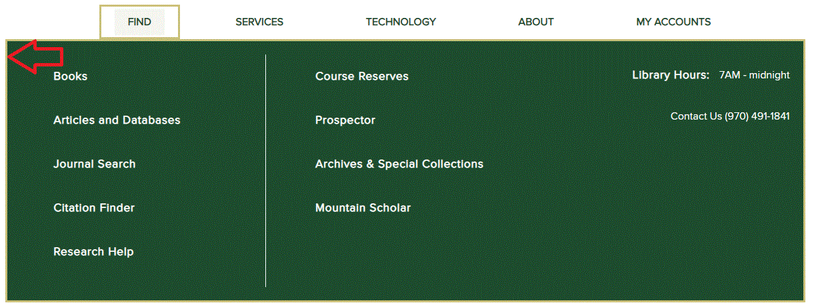

My initial thought upon accessing this website was how simple and clean it was. It had the components I would need if I were a student trying to access information for a research assignment. I know where I’m at because the site has an identity. I can search with the toolbox that is displayed well. I can easily tell what the hours are, should I need to physically go to the library. I can also contact the library should I need to (though I was disappointed that the chat or other ways to contact a librarian were not highlighted and no one wants to call a librarian). Circled in red in the image below is where you would click to chat with a librarian.
The Planes
Product Objective
The mission of Colorado State University Libraries is to first, be “committed to the University’s mission to support excellence in teaching and research by providing collections that enable undergraduate and graduate students and faculty to have access to resources and information they need for education, scholarship, and research” (Collection Development Policies, n.d.). Additionally, the Colorado State University Libraries “prefers to collect in electronic formats when feasible. As new technologies and practices emerge, the Libraries will adapt the collection strategies to those which will best serve its users” (Collection Development Policies, n.d.). The search box that allows users to search “almost everything” supports Colorado State University Libraries’ mission to provide collections to enable and provide access for education, scholarship, and research because it allows the user to do exactly what the box was created to do, search almost everything. That would include the collections that are being provided by Colorado State University Libraries.
User Needs
To meet user needs, it’s important for a website to do what the user needs. For example, my persona, Jane Doe, needs to complete a research assignment for a class that requires a number of various formats of materials from the library. The site has the components to complete those tasks. Components include a well branded website (to know that I’m at the library’s site), a search box (to find my requirements) and a way to contact someone at the library (should I have further questions).
Functional Specifications
Being Jane Doe, the search box works well. I can select from the dropdown menu what I want to search and I have the option to do an advanced search, too. As mentioned previously, I was disappointed with the phone number of the library being provided rather than a texting number or chat box, but there is the option at the top in the banner with the site identity to “ask”. The great thing about this option, is that it is available on all the pages so no matter where I get stuck, I can ask someone for help. Additional components of the site are the dropdown navigation menus (which you have to click to access rather than hover), various buttons that work and lead to relevant information when clicked, and a sliding gallery promoting various content relating to the library.
Content Requirements
Here it’s difficult to know what content requirements have been decided upon. I would imagine that the quantity of dropdown menus in the navigation bar are limited, as well as buttons towards the bottom of the page. Garrett (2011) mentions that feature sizes and pixel dimensions should be addressed and I’m sure Colorado State University Libraries have done that, especially for their sliding gallery which includes images and text. I would imagine there would be a pixel requirement as well as time requirement for how long the content is available.
Interaction Design
When looking at the interactive design, the scroll bar works well, the links are clearly defined either by boldness of the text or through buttons and they work. The only interactive design issue I see on this site is the navigation at the top (image below). When you click one of the sections, it does drop down, but if you move your mouse outside the dropdown (red arrow), it disappears which may create frustration or lead to a user missing valuable information. Ideally, I would have liked to see the menu stay put until I clicked on the section or labeled in a way that would not require a user to scroll down. The sliding gallery works well and even allows users to go to the next slide without having to wait for the allotted time given by the potential content requirements.

Information Architecture
The best part about this site is the structure and use of language. The tasks and content are grouped together and the labeling makes sense. For example, “find”, lets a user know that when they click on this option, options to “find” materials will appear. This is true for all the content on the main library website.
Interface Design
For Jane Doe trying to complete a research assignment with various requirements, the search box is appropriate. I can use the dropdown menu to choose the different options of searching and then I can type my search into the box. The sliding gallery is appropriate as it allows the library to showcase promotional content (which also minimizes the amount of content on the site). The arrows on the sliding gallery are also appropriate, allowing the user to move at their own pace. As mentioned before, the navigation dropdown menu could use some work.
Navigation Design
The navigation design is done well for this site. The way the dropdown menus and buttons are labeled, are clear and correct indicators of what content is to follow. For example, “technology”, when selected, my options regarding technology appears, more than what I even knew the library had!
Information Design
It speaks volumes to Colorado State University Libraries’ website that so little is on the main page, yet Jane Doe can still achieve the requirements for an assignment. As far as the wireframe goes, the logo is in the appropriate place, navigation selections are kept to a minimum, yet direct users to the content they are looking for, and the search box is in a prominent location, making it a focus of the site. Partner (Colorado State University) content is kept at the bottom to reduce confusion when on the library's site. Again, little yet arranged well with content segmented apart from each other.
Surface Plane
Colorado State University sets the standards for the styles used on branded sites so colors chosen are not chosen by the library. However, the library’s use of the colors are done well. The CSU Green is used in the header, buttons, and footer. Additionally, the CSU Green is used to accentuate important text. CSU White is the color of the main page, allowing the text to be read well. The site follows the same style as other CSU sites, so users will know they are at a CSU site when accessing different pages. As mentioned before, the text is kept to a minimum, keeping the chances of becoming overwhelmed by the information down to a minimum. There are not many images, only what is being featured in the sliding gallery, which keeps the clutter down to a minimum. Overall, it’s a clean and usable website.
References
Garrett, J. J. (2011). The elements of user experience: User-centered design for the Web and beyond. Berkeley, CA: New Riders.